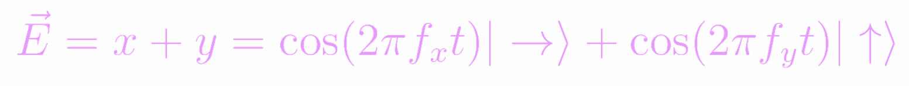

The Math Beneath Omniphotics
Master the math beneath Omniphotics
Light as a Wave
As we all know, light can be modeled as both a particle and a wave. For the purposes of understanding polarization, it's more useful to think of it as a wave. Specifically, we can treat light as a cosine wave. A horiztonally polarized light wave can be represented by a matrix with the following x and y components:

The x-component being the standard cosine function with amplitude Ax, frequency fx, and phase shift Φx, and the y-component being 0. Similarly, you can represent vertically polarized light as so:
In quantum mechanics, we often represent this using what's called "Bra-ket" notation, a system that uses "bras" (denoted by "❬ ❘") and "kets" (denoted by "❘ ❭") to denote a vector in an abstract vector space, and to represent the state of a quantum system. The two vectors above would be written as:

With the functions next to the kets representing the component of the vector in that direction. These waves can also be added together to create a diagonal wave:
Note that the waves have no phase shift or amplitude for this. This would create a perfect diagonal vector along the y = x line. Giving the two vectors different phase shifts would create different shapes and types of polarization. Adding different amplitudes would create a diagonal vector that is not along the y = x line, and adding different phase shifts could instead create an ellipse. If you have two waves which have the same amplitude but phase shifts that are 90° (π/2 rad) apart, they will trace out a circle, creating what is known as "circularly polarized light":

Of course these again have to have equal amplitudes, because that determines the magnitude of the vector and thus the radius of the circle. These cosine functions can also be represented with a complex number:
Of course, this should be fairly intuitive if you understand the relationship between waves and complex numbers. In a sense, all of these representations are different ways of conveying the same idea: wrapping two numbers together. A two dimensional matrix, a two dimensional vector, a complex number, and a cosine wave all show two numbers in conjunction with one another. The case of the cosine wave is a bit more obscure, but it comes in the form of the amplitude and phase shift.
Omniphotics Math
Copyright © 2020 by A Nonexistant Inc.
Prior Edition © 2020 by An Equally Nonexistent Inc.
All rights not reserved. Any part of this website may be reproduced
without permission from the publisher, especially considering he is 17.